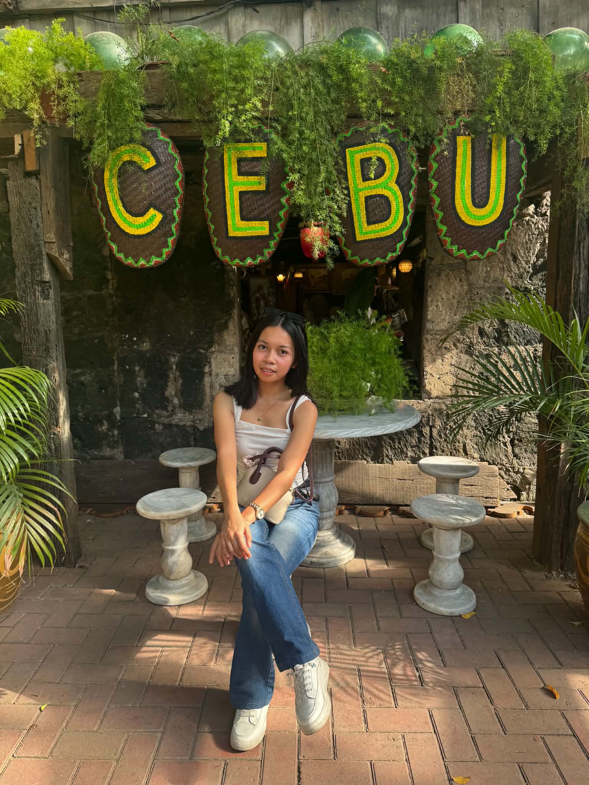
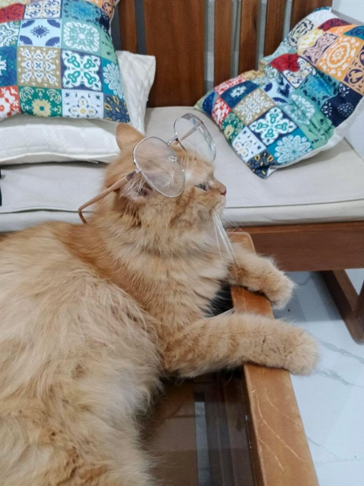
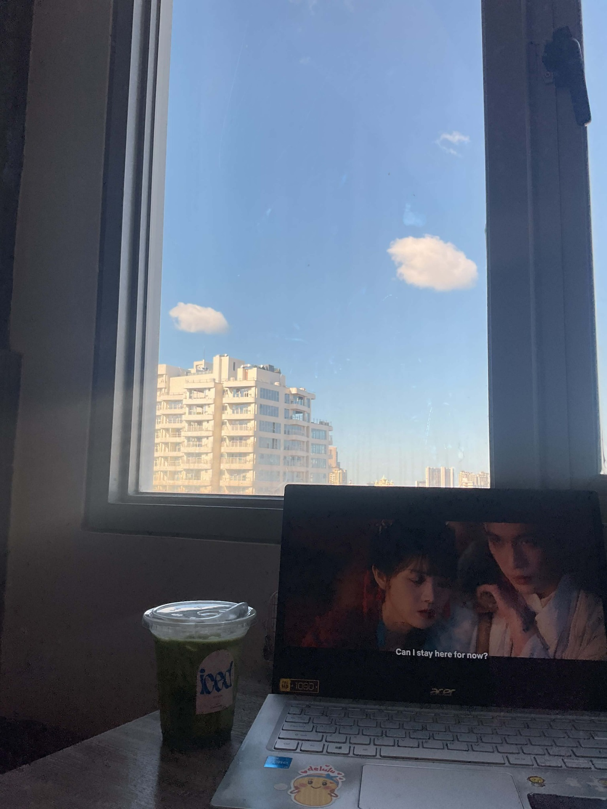
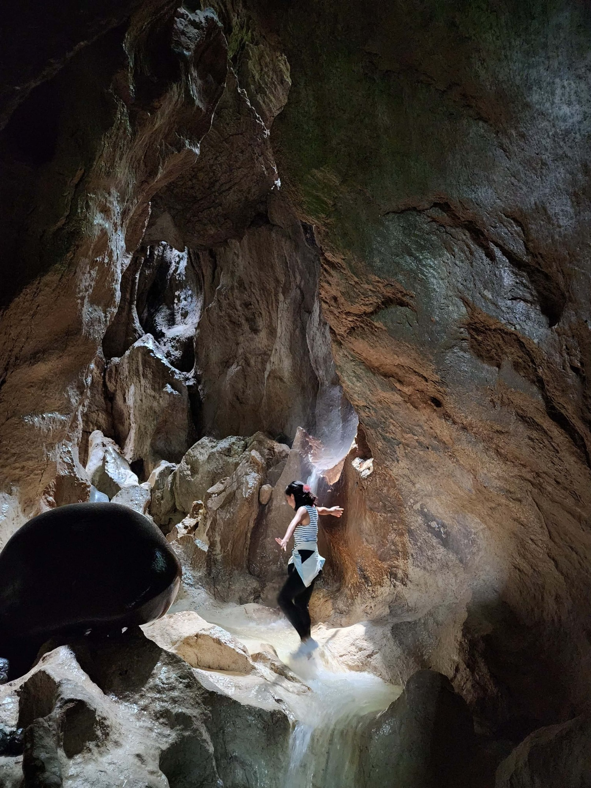
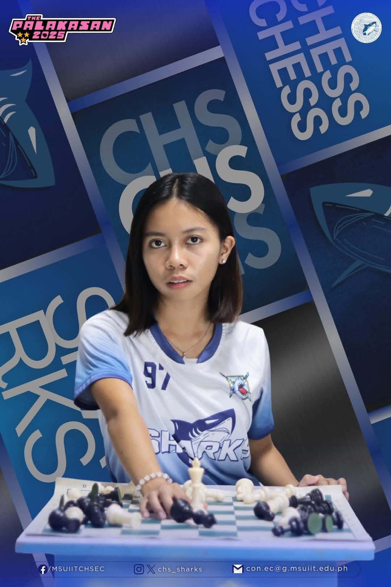

01 — Academic Skills
Self-assessed proficiency

Princess S. Responte
BS Nursing
Welcome to my little world—a collection of the things I love, the experiences that shape me, and the dreams I’m working toward.
Explore my worldA little introduction, one card at a time.
I’m Princess, a 21-year-old Aquarius and BS Nursing student. I’m constantly learning, growing, and working toward my big dreams—one step at a time.
I love reading manhwas, watching anime like One Piece and Demon Slayer, making mini vlogs, café hopping, going to the gym, and exploring new places.
I’m working toward graduating with Latin honors and becoming a registered nurse.
Little pieces of my world.




Cats · 1 of 5
Learning, growing, and moving toward my dream.
Tambo Central School
The beginning of my academic journey, where I built the foundations for the years ahead.
MSU-IIT Integrated Developmental School
Years of learning, discovering my interests, and growing as a student and a person.
BS Nursing
My current chapter—developing the knowledge, skills, and dedication I need to become a registered nurse. Expected graduation: 2027.
What I bring to my studies and the work I do.
Self-assessed proficiency
Organizing documents, coordinating tasks, and keeping things on track.
Helping with planning, coordination, logistics, and smooth execution.
Creating clear, organized, and polished documents, announcements, and presentations.
Putting together simple, purposeful visuals and materials for projects and activities.
What stood out to me was her eagerness to learn and her willingness to take on every challenge that came her way. She takes her responsibilities seriously and consistently approaches her work with dedication, accountability, and integrity.
Princess is kind, responsible, and trustworthy. She shows genuine initiative in the work she takes on and can be relied upon to follow through with her responsibilities. Her willingness to serve and contribute makes her a dependable person to work with.
Take a receipt, make a memory, or do both.
Thank you for exploring my little world! Enter your nickname and take home a receipt to remember your visit.
— Visit Receipt —
Sections explored:
Total: One new connection ✨
Thank you for spending a little time in my world. I hope you found something that made you smile. Until your next visit!
With love,
Princess
Three poses. One little keepsake.
Press Start camera when you're ready.
Each photo has a three-second countdown. Camera permission is requested only when you press Start. No microphone is used.
Photos stay in this page's memory and are downloaded to your device. They are never uploaded.